INSTITUTO POLITÉCNICO NACIONAL
UNIDAD PROFESIONAL INTERDISCIPLINARIA EN INGENIERÍA Y TECNOLOGÍAS AVANZADAS
SEÑALES Y SISTEMAS
Práctica 5 'Series de Fourier en tiempo continuo'
Profesor: Dr. Rafael Martinez Martinez
Integrantes del equipo:
- Gutierrez Montor Mauricio
- Sánchez Moreno Mauricio Fabián
- Vanegas López Eduardo
Grupo 2TV1
Objetivos:
- Realizar gráficas de series de Fourier exponenciales y trigonométricas en tiempo continuo
- Manipulación de instrucciones en MATLAB
- Calculo númerico de los coeficientes de Fourier
Contents
Introducción:
Podemos computar DN numéricamente usando la DFT (la transformada discreta de Fourier), que utiliza las muestras de una señal periódica 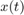 durante un período. El intervalo de muestreo es T segundos. Por lo tanto, hay: 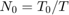 número de muestras en un período: 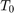
Para encontrar la relación entre DN y las muestras de x (t), 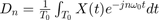
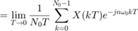
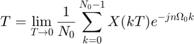
donde 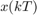 es la muestra k-ésima de y
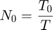
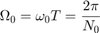
En la práctica, es imposible hacer 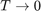 . Podemos hacer T pequeño, pero no cero, lo que provocará que los datos aumenten sin límite. Por lo tanto, ignoraremos el límite en T con la comprensión implícita de que T es razonablemente pequeño. T distinto de cero dará lugar a algún error computacional, que es inevitable en cualquier evaluación numérica de una integral.El error resultante de T distinto de cero se denomina error de aliasing. Por lo tanto, podemos expresar como:
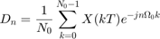
Ahora, 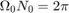. Por lo tanto, 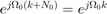. Sigue que 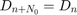
La propiedad de periodicidad significa que más allá de 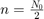, los coeficientes representan los valores para n negativo.Por ejemplo, cuando 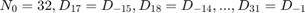. El ciclo se repite de nuevo a partir de n = 32. Para este propósito necesitamos muestras de x (t) durante un período a partir de t = 0. En este algoritmo, también es preferible (aunque no necesario) que 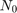 sea una potencia de 2, esto es 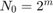, donde m es un entero.
Ejemplo 6.1
a)Para 4 armónicos
clf d0=0.5043; a=-9; b=9; t0=0; tf=pi; f=@(t) exp(-t/2).*(t>=0 & t<=pi); cn=@(n) 0.5043*(2/(1+(16*n^2)^(1/2))); tn=@(n)-atan(4*n); armo=4; so=@(t) f(t)+f(t+pi)+f(t+(2*pi))+f(t+(3*pi))+f(t-pi)+f(t-(2*pi))+f(t-(3*pi)); sfc(t0,tf,cn,d0,so,armo,a,b,tn);
99.5043 128.5043 99.5043 100.2017 129.2017 100.2017 101.1121 130.1121 101.1121 102.0776 131.0776 102.0776 103.0593 132.0593 103.0593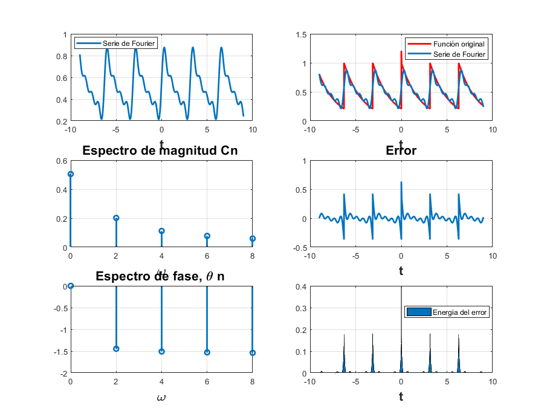
b)Para 15 armónicos
clf d0=0.5043; a=-9; b=9; t0=0; tf=pi; f=@(t) exp(-t/2).*(t>=0 & t<=pi); cn=@(n) 0.5043*(2/(1+(16*n^2)^(1/2))); tn=@(n)-atan(4*n); armo=15; so=@(t) f(t)+f(t+pi)+f(t+(2*pi))+f(t+(3*pi))+f(t-pi)+f(t-(2*pi))+f(t-(3*pi)); sfc(t0,tf,cn,d0,so,armo,a,b,tn);
99.5043 128.5043 99.5043 100.2017 129.2017 100.2017 101.1121 130.1121 101.1121 102.0776 131.0776 102.0776 103.0593 132.0593 103.0593 104.0480 133.0480 104.0480 105.0403 134.0403 105.0403 106.0348 135.0348 106.0348 107.0306 136.0306 107.0306 108.0273 137.0273 108.0273 109.0246 138.0246 109.0246 110.0224 139.0224 110.0224 111.0206 140.0206 111.0206 112.0190 141.0190 112.0190 113.0177 142.0177 113.0177 114.0165 143.0165 114.0165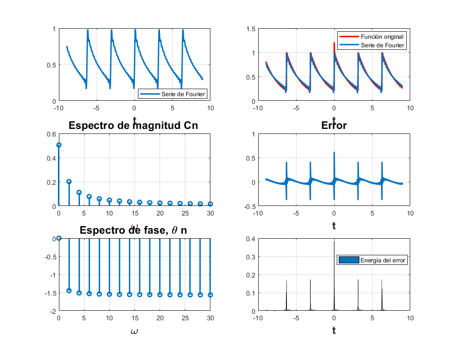
Ejemplo 6.2
a)Para 4 armónicos
clf d0=0; dn=@(n) (-12/(n.^2*pi.^2))*sin((n*pi)/2)*1j; t0=0; tf=2; f=@(t) (-3/2<t & t<=-1/2).*(-6-6*t)+(t<=1/2 & -1/2<=t).*(6*t)+(1/2<t & t<=3/2).*(6-6*t)+(3/2<t & t<=5/2).*(6*t-12)+(5/2<t & t<=7/2).*(-6*t+18); armo=4; a=-6; b=6; sfc2(t0,tf,dn,d0,f,armo,a,b)
100 129 100 1.0e+02 * 1.0100 - 0.0122i 1.3000 - 0.0122i 1.0100 - 0.0122i 1.0e+02 * 1.0200 - 0.0000i 1.3100 - 0.0000i 1.0200 - 0.0000i 1.0e+02 * 1.0300 + 0.0014i 1.3200 + 0.0014i 1.0300 + 0.0014i 1.0e+02 * 1.0400 + 0.0000i 1.3300 + 0.0000i 1.0400 + 0.0000i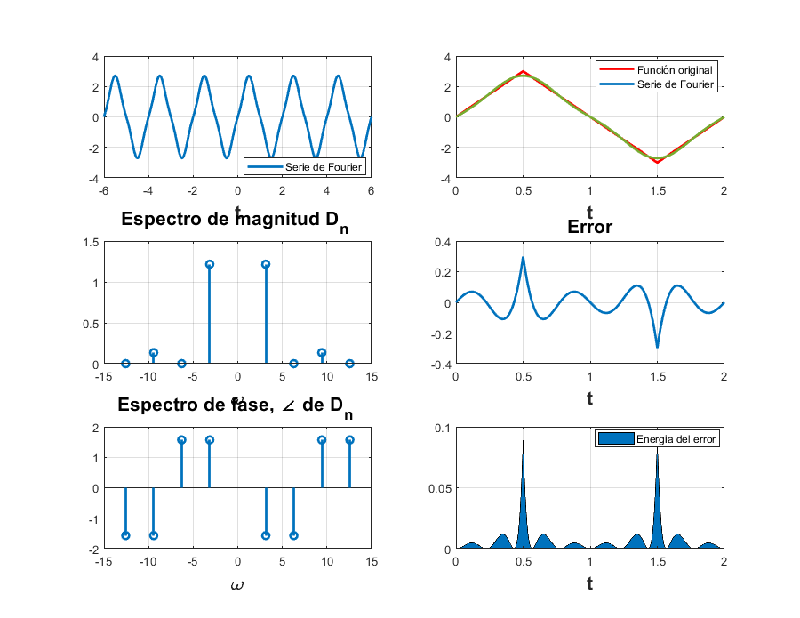
b)Para 15 armónicos
clf d0=0; dn=@(n) (-12/(n.^2*pi.^2))*sin((n*pi)/2)*1j; t0=0; tf=2; f=@(t) (-3/2<t & t<=-1/2).*(-6-6*t)+(t<=1/2 & -1/2<=t).*(6*t)+(1/2<t & t<=3/2).*(6-6*t)+(3/2<t & t<=5/2).*(6*t-12)+(5/2<t & t<=7/2).*(-6*t+18); armo=15; a=-6; b=6; sfc2(t0,tf,dn,d0,f,armo,a,b)
100 129 100 1.0e+02 * 1.0100 - 0.0122i 1.3000 - 0.0122i 1.0100 - 0.0122i 1.0e+02 * 1.0200 - 0.0000i 1.3100 - 0.0000i 1.0200 - 0.0000i 1.0e+02 * 1.0300 + 0.0014i 1.3200 + 0.0014i 1.0300 + 0.0014i 1.0e+02 * 1.0400 + 0.0000i 1.3300 + 0.0000i 1.0400 + 0.0000i 1.0e+02 * 1.0500 - 0.0005i 1.3400 - 0.0005i 1.0500 - 0.0005i 1.0e+02 * 1.0600 - 0.0000i 1.3500 - 0.0000i 1.0600 - 0.0000i 1.0e+02 * 1.0700 + 0.0002i 1.3600 + 0.0002i 1.0700 + 0.0002i 1.0e+02 * 1.0800 + 0.0000i 1.3700 + 0.0000i 1.0800 + 0.0000i 1.0e+02 * 1.0900 - 0.0002i 1.3800 - 0.0002i 1.0900 - 0.0002i 1.0e+02 * 1.1000 - 0.0000i 1.3900 - 0.0000i 1.1000 - 0.0000i 1.0e+02 * 1.1100 + 0.0001i 1.4000 + 0.0001i 1.1100 + 0.0001i 1.0e+02 * 1.1200 + 0.0000i 1.4100 + 0.0000i 1.1200 + 0.0000i 1.0e+02 * 1.1300 - 0.0001i 1.4200 - 0.0001i 1.1300 - 0.0001i 1.0e+02 * 1.1400 - 0.0000i 1.4300 - 0.0000i 1.1400 - 0.0000i 1.0e+02 * 1.1500 + 0.0001i 1.4400 + 0.0001i 1.1500 + 0.0001i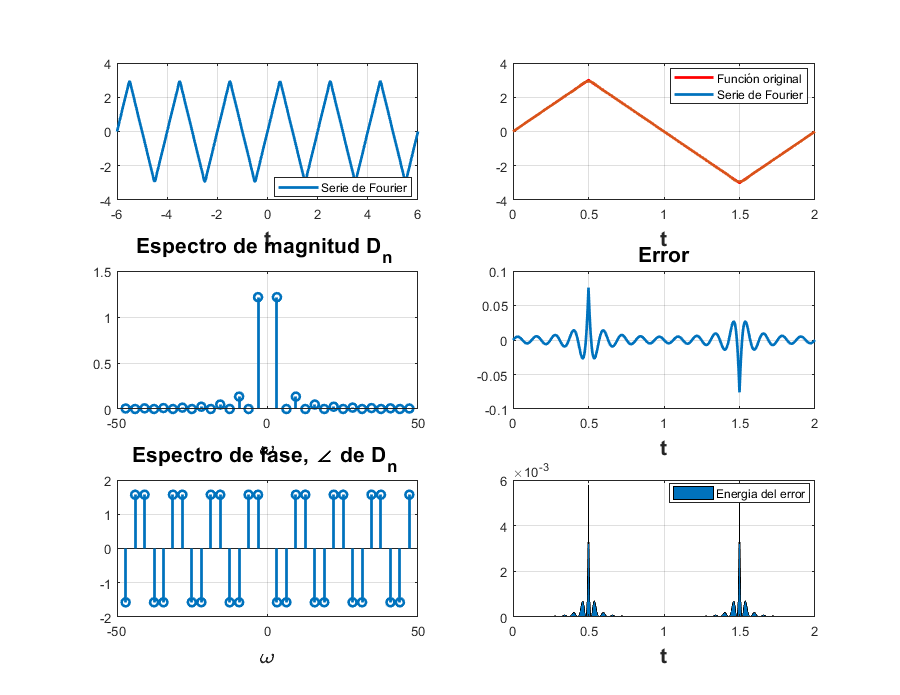
Ejemplo 6.4
a)Para 4 Armónicos
clf
d0=1/2;
dn=@(n)(1/(n*pi))*sin((n*pi)/2);
t0=-pi/2;
tf=3*pi/2;
f=@(t) 1.*(t>=(-pi/2) & t<(pi/2))+0.*(t>=(pi/2) & t<=(3*pi/2));
%f=@(t) 0.*(t>=-pi & t<=-pi/2) + 1.*(t>=(-pi/2) & t<(pi/2))+0.*(t>=(pi/2) & t<=(pi));
armo=4;
a=-15;
b=15;
sfc2(t0,tf,dn,d0,f,armo,a,b);
100.5000 129.5000 100.5000 101.3183 130.3183 101.3183 102 131 102 102.8939 131.8939 102.8939 104 133 104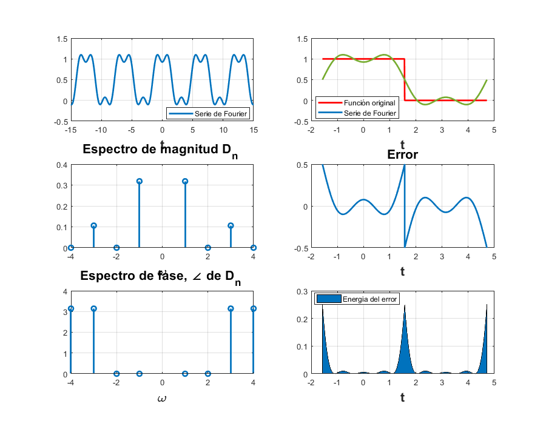
b)Para 15 Armónicos
clf
d0=1/2;
dn=@(n)(1/(n*pi))*sin((n*pi)/2);
t0=-pi/2;
tf=3*pi/2;
f=@(t) 1.*(t>=(-pi/2) & t<(pi/2))+0.*(t>=(pi/2) & t<=(3*pi/2));
%f=@(t) 0.*(t>=-pi & t<=-pi/2) + 1.*(t>=(-pi/2) & t<(pi/2))+0.*(t>=(pi/2) & t<=(pi));
armo=15;
a=-15;
b=15;
sfc2(t0,tf,dn,d0,f,armo,a,b);
100.5000 129.5000 100.5000 101.3183 130.3183 101.3183 102 131 102 102.8939 131.8939 102.8939 104 133 104 105.0637 134.0637 105.0637 106 135 106 106.9545 135.9545 106.9545 108 137 108 109.0354 138.0354 109.0354 110 139 110 110.9711 139.9711 110.9711 112 141 112 113.0245 142.0245 113.0245 114 143 114 114.9788 143.9788 114.9788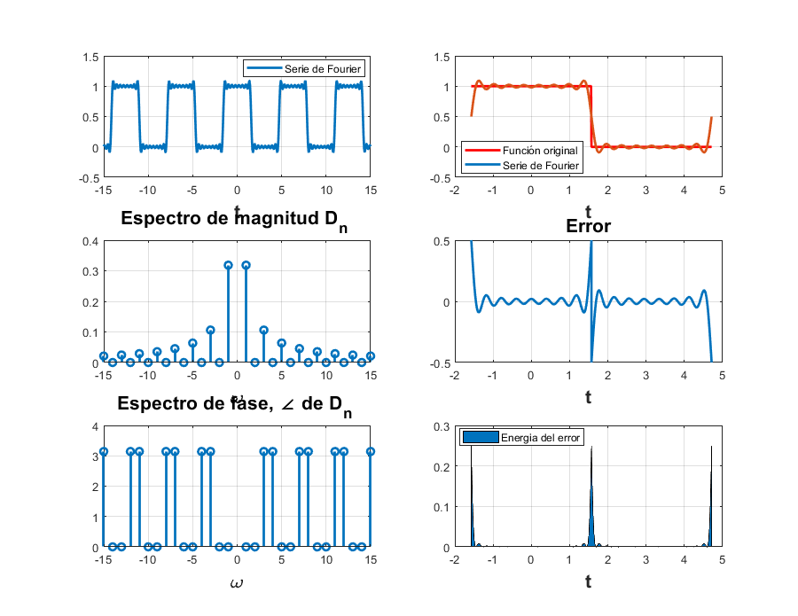
Ejemplo 6.5
a) Para 4 Armónicos
clf d0=0.504; dn=@(n) (0.504)/(1+(4*n*j)); t0=0; tf=pi; f=@(t) exp(-t/2); armo=4; a=-9; b=9; sfc2(t0,tf,dn,d0,f,armo,a,b);
100.5040 129.5040 100.5040 1.0e+02 * 1.0103 - 0.0012i 1.3003 - 0.0012i 1.0103 - 0.0012i 1.0e+02 * 1.0201 - 0.0006i 1.3101 - 0.0006i 1.0201 - 0.0006i 1.0e+02 * 1.0300 - 0.0004i 1.3200 - 0.0004i 1.0300 - 0.0004i 1.0e+02 * 1.0400 - 0.0003i 1.3300 - 0.0003i 1.0400 - 0.0003i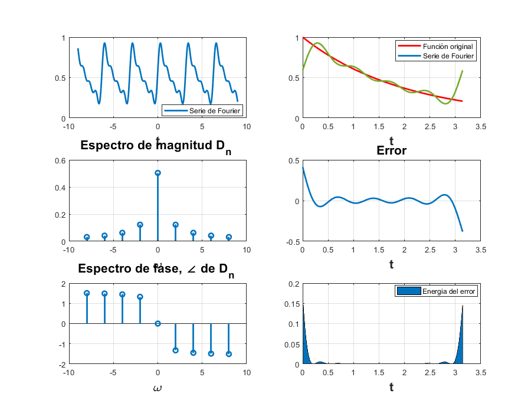
b) Para 15 Armónicos
clf d0=0.504; dn=@(n) (0.504)/(1+(4*n*j)); t0=0; tf=pi; f=@(t) exp(-t/2); armo=15; a=-9; b=9; sfc2(t0,tf,dn,d0,f,armo,a,b);
100.5040 129.5040 100.5040 1.0e+02 * 1.0103 - 0.0012i 1.3003 - 0.0012i 1.0103 - 0.0012i 1.0e+02 * 1.0201 - 0.0006i 1.3101 - 0.0006i 1.0201 - 0.0006i 1.0e+02 * 1.0300 - 0.0004i 1.3200 - 0.0004i 1.0300 - 0.0004i 1.0e+02 * 1.0400 - 0.0003i 1.3300 - 0.0003i 1.0400 - 0.0003i 1.0e+02 * 1.0500 - 0.0003i 1.3400 - 0.0003i 1.0500 - 0.0003i 1.0e+02 * 1.0600 - 0.0002i 1.3500 - 0.0002i 1.0600 - 0.0002i 1.0e+02 * 1.0700 - 0.0002i 1.3600 - 0.0002i 1.0700 - 0.0002i 1.0e+02 * 1.0800 - 0.0002i 1.3700 - 0.0002i 1.0800 - 0.0002i 1.0e+02 * 1.0900 - 0.0001i 1.3800 - 0.0001i 1.0900 - 0.0001i 1.0e+02 * 1.1000 - 0.0001i 1.3900 - 0.0001i 1.1000 - 0.0001i 1.0e+02 * 1.1100 - 0.0001i 1.4000 - 0.0001i 1.1100 - 0.0001i 1.0e+02 * 1.1200 - 0.0001i 1.4100 - 0.0001i 1.1200 - 0.0001i 1.0e+02 * 1.1300 - 0.0001i 1.4200 - 0.0001i 1.1300 - 0.0001i 1.0e+02 * 1.1400 - 0.0001i 1.4300 - 0.0001i 1.1400 - 0.0001i 1.0e+02 * 1.1500 - 0.0001i 1.4400 - 0.0001i 1.1500 - 0.0001i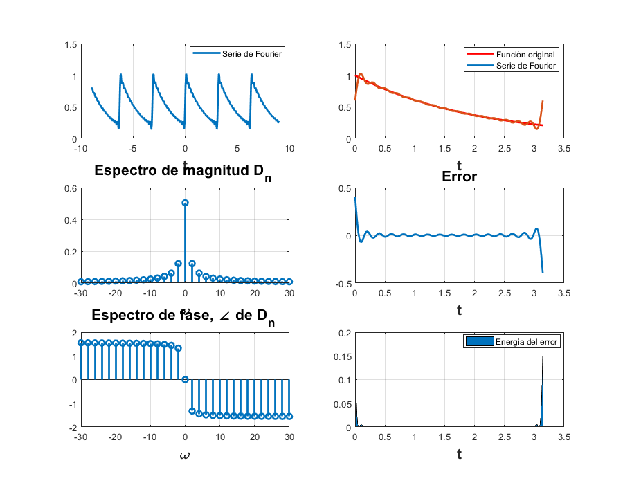
Ejemplo 6.7
a) Para 4 Armónicos
clf d0=1/3; dn=@(n) 1/3; t0=0; tf=3; f=@(t) 1.*(t==0)+0.*(t>=1 & t<=3)+1.*(t==3)+0.*(t>=3 & t<=6); armo=4; a=-7; b=7; sfcNuevo(t0,tf,dn,d0,f,armo,a,b);
100.3333 129.3333 100.3333 101.3333 130.3333 101.3333 102.3333 131.3333 102.3333 103.3333 132.3333 103.3333 104.3333 133.3333 104.3333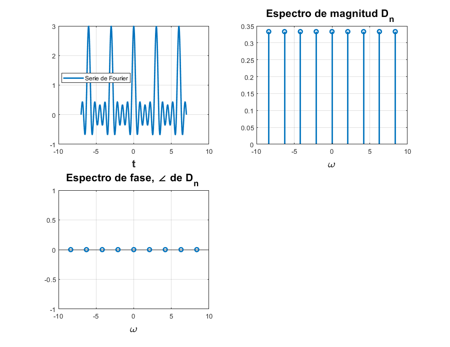
b) Para 15 Armónicos
clf d0=1/3; dn=@(n) 1/3; t0=0; tf=3; f=@(t) 1.*(t==0)+0.*(t>=1 & t<=3)+1.*(t==3)+0.*(t>=3 & t<=6); armo=15; a=-7; b=7; sfcNuevo(t0,tf,dn,d0,f,armo,a,b);
100.3333 129.3333 100.3333 101.3333 130.3333 101.3333 102.3333 131.3333 102.3333 103.3333 132.3333 103.3333 104.3333 133.3333 104.3333 105.3333 134.3333 105.3333 106.3333 135.3333 106.3333 107.3333 136.3333 107.3333 108.3333 137.3333 108.3333 109.3333 138.3333 109.3333 110.3333 139.3333 110.3333 111.3333 140.3333 111.3333 112.3333 141.3333 112.3333 113.3333 142.3333 113.3333 114.3333 143.3333 114.3333 115.3333 144.3333 115.3333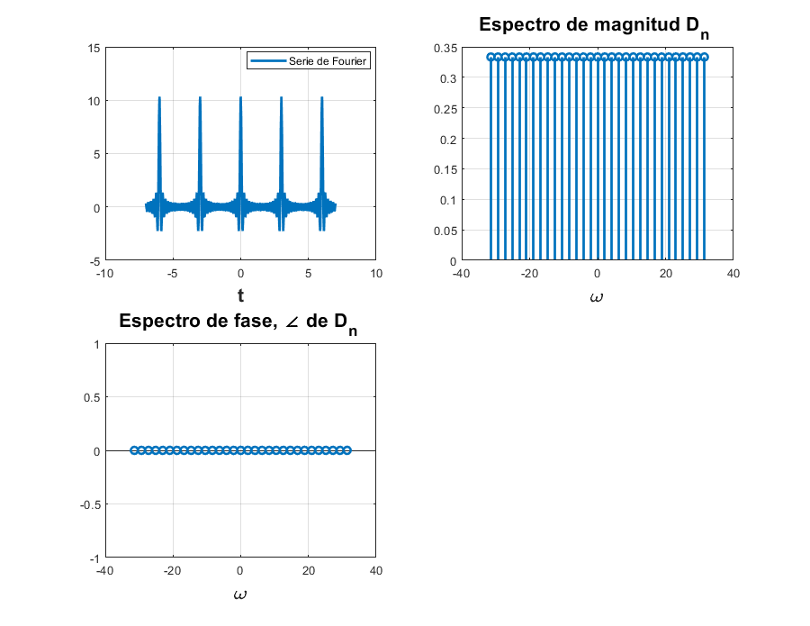
Computer Example C6.2
clf f=@(t) exp(-t/2); t=[0:0.001:20]; plot(t,f(mod(t,pi))) sumterms = zeros(15, length(t)); sumterms(1,:) = 0.504; %15 armonicos for n = 1:size(sumterms,1)-1; sumterms(n+1,:) = 0.504/(1+4*n*1j).*exp(2*n*t*1j); end x_N = cumsum (sumterms); figure(1); clf; ind = 0; for N = [0,1:2:size(sumterms, 1)-1], ind = ind+1; subplot (3,3,ind); plot (t,x_N(N+1,:), 'k',t,f(mod(t,pi))+0j, 'r--'); axis ([0 20 -0.2 1.2]); xlabel ('t'); ylabel (['x_{',num2str(N),'} (t)']); end
Warning: Imaginary parts of complex X and/or Y arguments ignored Warning: Imaginary parts of complex X and/or Y arguments ignored Warning: Imaginary parts of complex X and/or Y arguments ignored Warning: Imaginary parts of complex X and/or Y arguments ignored Warning: Imaginary parts of complex X and/or Y arguments ignored Warning: Imaginary parts of complex X and/or Y arguments ignored Warning: Imaginary parts of complex X and/or Y arguments ignored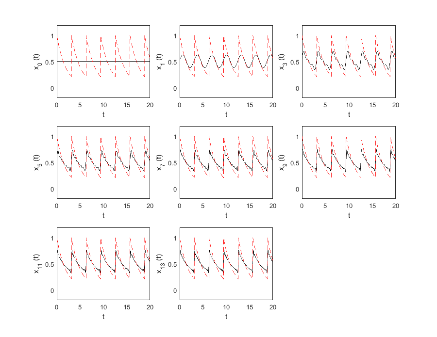
Métodos númericos
Primero, implementando el algoritmo DFT propuesto en Lathi COMPUTER EXAMPLE C6.4, para el ejemplo 6.5 que se desarrolló en el R10, se obtiene lo siguiente:
clf T_0 = pi; N_0 = 256; T = T_0/N_0; t = (0:T:T*(N_0-1))'; M = 10; x = exp(-t/2); x(1) = (exp(-pi/2) + 1)/2; figure(1) D_n = fft (x)/N_0; n = [-N_0/2:N_0/2-1]'; for a = 1:1:5 mag_dft(a)=abs(fftshift(D_n(a))); end for a = 1:1:5 ang_dft(a)=angle(fftshift(D_n(a))); end clf; subplot (2, 2, 1); stem(n, abs(fftshift (D_n)),'k'); axis ([-M M -.1 .6]); xlabel('n'); ylabel('|D_n|'); subplot (2, 2, 2); stem(n, angle(fftshift(D_n)),'k'); axis([-M M -pi pi]); xlabel ('n'); ylabel('\angle D n [rad]'); %------ T_0 = pi; N_0 = 256; T = T_0/N_0; W_0=2*pi/T_0; t = (0:T:T*(N_0-1))'; M = 10; x_0 =@(t) exp(-t/2); x_1 =@(t) exp(-t/2)*exp(-1j*W_0*t); x_2 =@(t) exp(-t/2)*exp(-2j*W_0*t); x_3 =@(t) exp(-t/2)*exp(-3j*W_0*t); x_4 =@(t) exp(-t/2)*exp(-4j*W_0*t);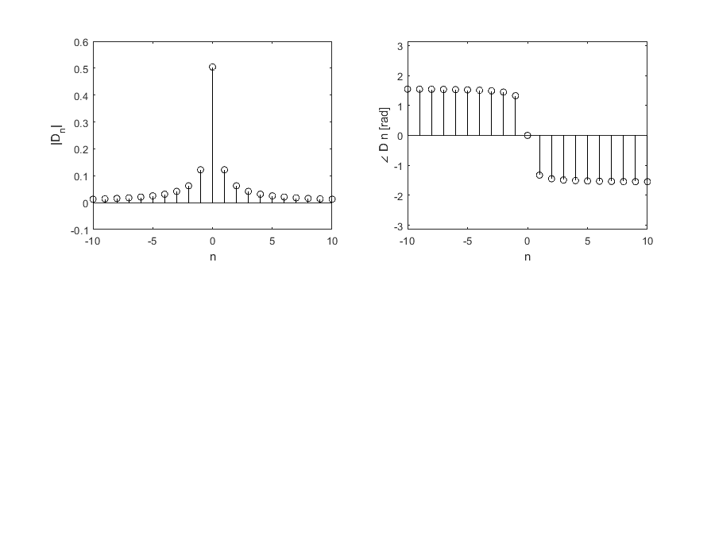
Hallando los D0,...D4 (n positiva) por trapecio compuesto. Aquí solo se encontraron los Dn positivos, para el simple hecho de comparar esos valores con la gráfica anterior, que son los Dns que nos interesan en la práctica.
n=[0:1:4]; D_n=[trap_com(x_0,0,pi,pi/2)/T_0,trap_com(x_1,0,pi,pi/2)/T_0,trap_com(x_2,0,pi,pi/2)/T_0,trap_com(x_3,0,pi,pi/2)/T_0,trap_com(x_4,0,pi,pi/2)/T_0]; mag_trap=abs(D_n); ang_trap=angle(D_n); clf; subplot (2, 2, 1); stem(n, abs( (D_n)),'k'); axis ([-M M -.1 .6]); xlabel('n'); ylabel('|D_n|'); subplot (2, 2, 2); stem(n, angle((D_n)),'k'); axis([-M M -pi pi]); xlabel ('n'); ylabel('\angle D n [rad]'); hold on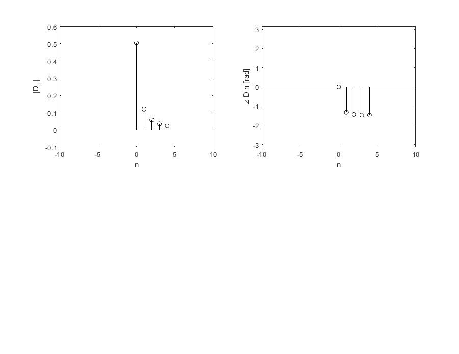
De acuerdo a Lathi, en el ejemplo 6.5, que se desarrolló en el R10, la serie de Fourier exponencial compleja tiene Dn: 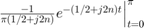 Para llegar al resultado más preciso, no se utilizó el resultado final de Lathi que indica 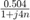. Sino que desarrollando, se encontró: 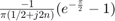
for n=2:1:5 mag_ex(n)=abs((-exp(-pi/2)+1)/(pi*(0.5+2j*(n-1)))); end mag_ex(1)=abs((-exp(-pi/2)+1)/(pi*(0.5))); for n=2:1:5 ang_ex(n)=angle((-exp(-pi/2)+1)/(pi*(0.5+2j*(n-1)))); end ang_ex(1)=angle((-exp(-pi/2)+1)/(pi*(0.5))); T = table(mag_dft',ang_dft',mag_trap',ang_trap',mag_ex',ang_ex'); T(1:5,:); T.Properties.RowNames = {'D0','D1','D2','D3','D4'}; T.Properties.VariableNames{'Var1'} = 'Abs_DFT'; T.Properties.VariableNames{'Var2'} = 'Ang_DFT'; T.Properties.VariableNames{'Var3'} = 'Abs_Trap_Com'; T.Properties.VariableNames{'Var4'} = 'Ang_Trap_Com'; T.Properties.VariableNames{'Var5'} = 'Abs_Exacto'; T.Properties.VariableNames{'Var6'} = 'Ang_Exacto'
T =
5×6 table
Abs_DFT Ang_DFT Abs_Trap_Com Ang_Trap_Com Abs_Exacto Ang_Exacto
________ _______ ____________ ____________ __________ __________
D0 0.50428 0 0.50474 0 0.50428 0
D1 0.1223 -1.3258 0.12063 -1.3184 0.12231 -1.3258
D2 0.062536 -1.4464 0.058915 -1.4306 0.062548 -1.4464
D3 0.041859 -1.4876 0.036274 -1.4609 0.041878 -1.4877
D4 0.031431 -1.5083 0.023788 -1.4657 0.031456 -1.5084
En su forma rectangular
DFT=mag_dft.*exp(1j.*ang_dft);
TRAP=mag_trap.*exp(1j*ang_trap);
EXAC=mag_ex.*exp(1j*ang_ex);
D= table(DFT',TRAP',EXAC');
D.Properties.RowNames = {'D0','D1','D2','D3','D4'};
D.Properties.VariableNames{'Var1'} = 'Dn_por_DFT';
D.Properties.VariableNames{'Var2'} = 'Dn_por_Trap_comp';
D.Properties.VariableNames{'Var3'} = 'Dn_exacto'
D =
5×3 table
Dn_por_DFT Dn_por_Trap_comp Dn_exacto
___________________ ___________________ ___________________
D0 0.50428+0i 0.50474+0i 0.50428+0i
D1 0.029665+0.11865i 0.030128+0.11681i 0.029664+0.11865i
D2 0.0077597+0.062053i 0.0082355+0.058337i 0.0077581+0.062065i
D3 0.0034794+0.041714i 0.0039773+0.036056i 0.0034778+0.041733i
D4 0.0019638+0.03137i 0.0024955+0.023657i 0.0019622+0.031395i
En la siguiente tabla se muestra la comparación del error entre el algoritmo del trapecio compuesto y el algoritmo de la Transformada de Fourier Discreta (DFT).
DFT_EXAC=abs(EXAC-DFT);
TRAP_EXAC=abs(EXAC-TRAP);
CMP= table(DFT_EXAC',TRAP_EXAC');
CMP.Properties.RowNames = {'D0','D1','D2','D3','D4'};
CMP.Properties.VariableNames{'Var1'} = 'ERROR_DFT';
CMP.Properties.VariableNames{'Var2'} = 'ERROR_TRAP'
CMP =
5×2 table
ERROR_DFT ERROR_TRAP
__________ __________
D0 1.5822e-06 0.00046075
D1 6.5235e-06 0.0019053
D2 1.2756e-05 0.0037589
D3 1.9053e-05 0.0056998
D4 2.5368e-05 0.0077565
Por lo tanto se puede ver que el algoritmo DFT es más preciso que el del trapecio compuesto, puesto que hubo menor error que el valor exacto.
El algoritmo del trapecio compuesto implementado, de acuerdo con la información de la práctica anterior fue el siguiente:
function [inte,error]= trap_com(f,a,b,u) %Primer argumento es una función anónima a la que se quiere encontrar la %integral por aproximación del trapecio compuesto. %a,b: son el límete inferior y superios respectivamente, de la integración. %u: número entre a y b que ajusta el error suma=0; n=15; h=(b-a)/n; ft=sym(f); dd=diff(diff(ft)); ddf=matlabFunction(dd); inte=(h/2)*(f(a)+f(b)); error=-(((b-a)/12)*h^2)*ddf(u); for in=1:1:(n-1) xin=a+in*h; suma=suma+f(xin); end inte=inte+h*suma; end